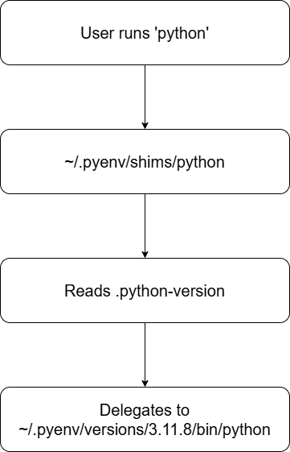
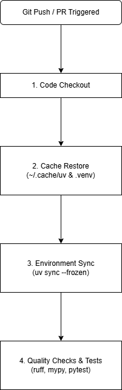

Project Management
All contents here are generated by Gemini.
Ecosystem Tooling Architectures
- Modern Python development uses single unified interfaces that manage environments, dependency resolution, lockfiles, and execution contexts together.
Python-Native Management Pioneers (Poetry)
Poetrypioneered lockfile-driven development in Python.- It relies on a custom
[tool.poetry]configuration table insidepyproject.tomland uses a pure-Python SAT solver (PubGrub) to resolve dependency trees.
Working with Poetry

Rust-Powered Consolidated Ecosystems (uv)
uvis a drop-in replacement forpip,pip-tools,virtualenv,pyenv, andpoetry.- Built in Rust,
uvleverages global content-addressed package caching and copy-on-write file system operations, executing resolution and installation steps 10x–100x faster than legacy tools.
Working with uv
The generated pyproject.toml declares project rules in standardized format.
Task Execution and One-off Tooling
- Traditional Python workflows often require manually creating, activating, and managing virtual environments before executing scripts or running standalone development tools like code linters, test runners, or project generators.
uvsimplifies this operational model through two execution commands.uv run: for project-scoped task execution. It executes scripts, applications, or commands within the context of a project's managed virtual environment.uvx: for ephemeral, one-off global tool execution. It is an alias foruv tool run.
Python Runtime & Version Management
- Production Python applications require strict runtime version isolation.
- Running production code on whatever system interpreter happens to be installed globally on Ubuntu or macOS leads to runtime failures when system packages update.
Traditional Runtime Management - pyenv
pyenvoperates by intercepting calls to Python binaries using shell shims.pyenvis the direct equivalent of NVM (Node Version Manager).- Its sole job is to download, install, and switch between global and project-specific Python interpreter binaries (3.10, 3.11, 3.12).

Modern Runtime Management - uv

uvincorporates Python distribution management natively, removing the need forpyenvor shell shim setup.- It downloads pre-built, production-ready CPython binaries directly from Standalone Python Builds.
- When invoking
uv venvoruv run,uvautomatically inspects.python-versioninpyproject.toml, fetches the requested Python binary if missing, and provisions the virtual environment using that exact engine. - uv is conceptually NVM +
npm+npxcombined into a single binary.- Managing Python engine versions:
uv python install 3.12. Similar to NVM. - Managing dependencies and lockfiles:
uv add fastapi/uv sync. Similar tonpm. - Running one-off package tools without global installation:
uvx ruff check .. Similar tonpx.
- Managing Python engine versions:
- While installing
uvviapipis possible (pip install uv), it creates a bootstrapping loop. It forces dependence on a system Python interpreter andpipinstallation just to manage Python tools. - Using the standalone executable installer is the recommended rule to follow.
- Because
uvis a pre-compiled, self-contained Rust binary, there is no need to have Python pre-installed on the system at all.
- When running
uv init my-appwithout specifying a version, uv checks two things:- It looks for any existing Python installations managed by
uvor the system. - If none exist (or none meet basic defaults), it automatically fetches and installs the latest stable CPython version in the background into an isolated cache directory.
- It then generates
.python-versionpinned to that downloaded version (e.g.,3.12.2) and setsrequires-python = ">=3.12"insidepyproject.toml.
- It looks for any existing Python installations managed by
- To use a specific python version use the
--pythonflag during initialization.- For example:
uv init --python 3.11 my-legacy-service
- For example:
Production Deployment Patterns
- Deploying any applications to production environments requires strict adherence to three core engineering principles.
- Reproducibility: ensuring identical code and dependency execution across development, staging, and production.
- Minimized container attack surfaces: excluding unnecessary build compilers and shell tools.
- Optimized image build times: leveraging layer caching.
Deterministic CI/CD Synchronization Pipelines

- When running dependency operations in automated pipelines, there are some flags that represent the standard rule to follow.
--frozen- Forces
uvto readuv.lockdirectly without evaluating or updating it againstpyproject.toml. - If a developer modified dependencies in
pyproject.tomlwithout runninguv locklocally before committing, the CI job fails immediately.
- Forces
--no-dev- Excludes development-only dependency groups (e.g.,
pytest,ruff,mypy) from runtime installations, reducing deployment payload size.
- Excludes development-only dependency groups (e.g.,
--locked- Asserts that
uv.lockis present and fully satisfied without making network calls to check for missing packages.
- Asserts that
Enterprise Dockerization Patterns Using uv Multi-Stage Builds
- Building minimal, production-hardened Container Images requires Multi-Stage Docker Builds.
- This strategy separates the build environment (which requires build backends and package download mechanisms) from the runtime environment (which requires only the compiled Python interpreter, virtual environment, and application source code).
Key Production Container Optimization Techniques
- Decoupling Dependency Layers (
--no-install-project)- By default,
uv syncinstalls both project dependencies and the root project itself. - Running
uv sync --no-install-projectfirst installs only external libraries. - Because external dependencies change far less frequently than application source code, Docker caches this heavy layer across daily code pushes.
- By default,
- Bytecode Pre-Compilation (
--compile-bytecode)- Passing
--compile-bytecodeconverts.pyfiles into optimized.pyccompiled bytecode binaries during image build time. - This shifts compilation latency from container startup to image creation, accelerating container boot times in Kubernetes clusters.
- Passing
- Non-Root Execution Security Rule
- Containers should never execute process entrypoints as root.
- Creating a dedicated non-system user mitigates container breakout vulnerabilities in cloud environments.